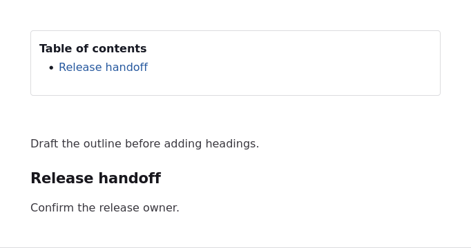

FountainJS vs ProseMirror and Tiptap
All three can power a rich-text editor. The choice depends on which parts of the editor you want to build and which parts your application already relies on.
Which would I choose?
- ProseMirror
- Choose it when you want to design the schema, editing commands and interface yourself, especially if your team already works with ProseMirror transactions and plugins. ProseMirror guide
- Tiptap
- Choose it when you want ProseMirror’s engine with a higher-level extension API, or your product already depends on a Tiptap extension. Tiptap editor overview
- FountainJS
- Try it when you want comments, tracked changes and Yjs collaboration as MIT-licensed modules, or need to process the same document in Node.js. You choose the UI, storage and collaboration provider. It is an early beta with its own model and plugin API. Existing ProseMirror plugins and Tiptap extensions require porting. Edit a document · Download a starter
What survived a save in GitLab?
An author inserted a table of contents into an issue before writing the first heading. In both editors, undo and redo worked and the initial save kept the directive. The difference appeared after reopening the issue, adding prose and saving again.

Both runs used GitLab CE 19.5.3 and Firefox 153 on Linux. The replacement used FountainJS build 1f16e1b0. Hosted staging and physical mobile verification remain open. Compare both captures · Inspect the matched run and build IDs